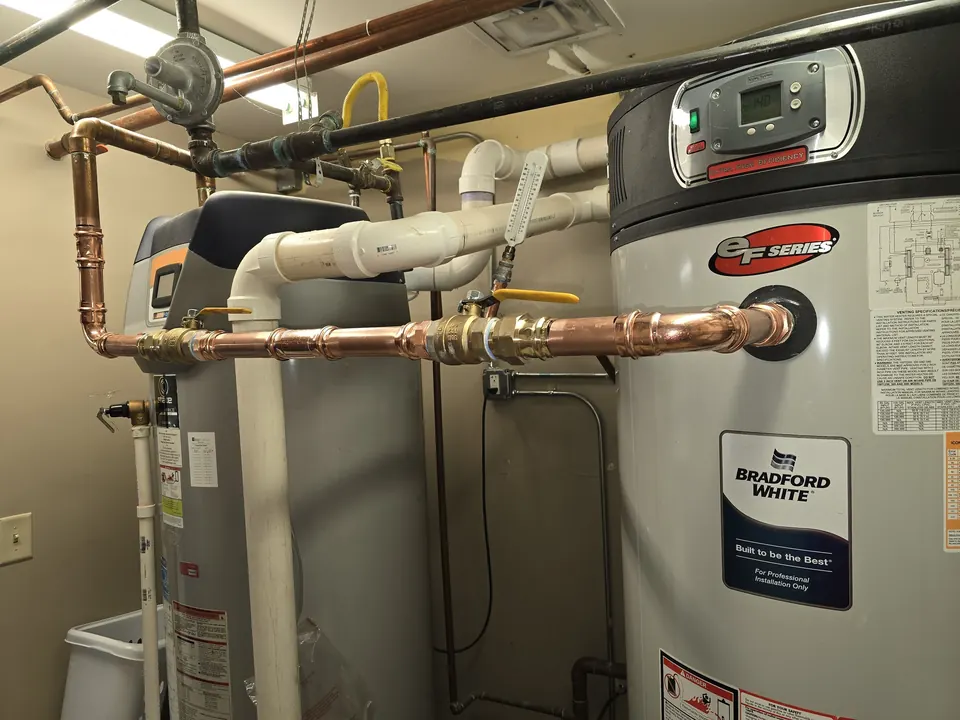
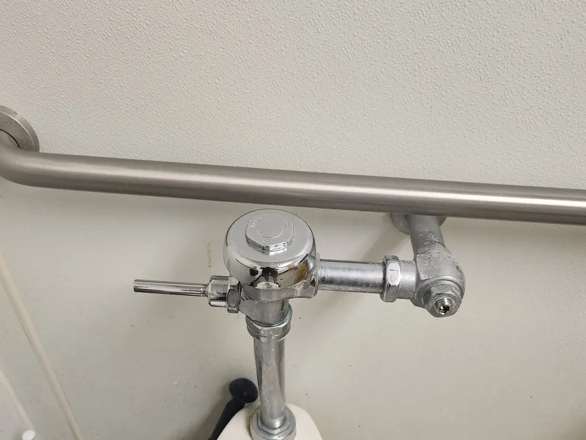

If you manage a business, retail space, office building, restaurant, industrial property, or multi-unit facility, Angle Stop Plumbing is your trusted partner for professional commercial plumbing maintenance, commercial plumbing repairs, commercial water heater services, commercial leak repair, and commercial backflow testing and repair.
Trusted Commercial Plumbing Services for Businesses and Facilities
Commercial plumbing systems face constant daily demand. High usage, aging infrastructure, code requirements, and unexpected failures can all create serious plumbing issues if not addressed quickly. At Angle Stop Plumbing, we work with business owners, facility managers, property managers, and maintenance teams to provide fast, efficient, and professional service.

Our commercial plumbing services include:
- Commercial plumbing maintenance
- Commercial plumbing repairs
- Commercial water heater repair
- Commercial water heater installation
- Commercial water heater maintenance
- Leak detection and commercial leak repair
- Slab leak repair
- Backflow testing
- Backflow repair and replacement
- Plumbing inspections
- Preventive plumbing service
- Emergency commercial plumbing support
We understand that every hour of downtime matters. Our focus is on minimizing disruption, protecting your property, and delivering plumbing work that supports daily business operations.
Commercial Plumbing Maintenance
Routine maintenance is essential for commercial plumbing systems. Preventive plumbing service reduces the risk of unexpected breakdowns, protects equipment, extends system life, and helps businesses avoid emergency repair costs.
Angle Stop Plumbing offers commercial plumbing maintenance services tailored to the needs of your building, occupancy level, plumbing system, and operational demands.
Our commercial plumbing maintenance services may include:
- Inspection of pipes, valves, fittings, and exposed plumbing lines
- Water pressure testing
- Water heater inspection and maintenance
- Leak checks in restrooms, kitchens, utility areas, and mechanical rooms
- Identification of aging or damaged plumbing components
- Fixture performance checks
- Shut-off valve inspection
- Backflow device inspection
- Preventive recommendations for repairs and replacements
Benefits of commercial plumbing maintenance
- Reduces costly plumbing emergencies
- Helps prevent water damage and operational downtime
- Supports code compliance
- Improves plumbing efficiency
- Extends the lifespan of water heaters and plumbing components
- Helps identify leaks before they become major failures
If you are searching for commercial plumbing maintenance near me or a reliable plumber for scheduled maintenance, Angle Stop Plumbing provides service plans and preventive solutions built for business needs.
Commercial Plumbing Repairs
Plumbing problems in a commercial building can quickly become expensive. Leaks, damaged pipes, fixture failures, water pressure problems, and equipment breakdowns can affect productivity, customer experience, and sanitation standards. Angle Stop Plumbing provides professional commercial plumbing repair services with a focus on fast diagnosis and dependable repairs.
We handle many types of commercial plumbing repairs, including:
- Pipe repair and replacement
- Valve and shut-off repairs
- Fixture repairs
- Toilet and restroom plumbing repairs
- Faucet and sink repairs
- Water pressure issues
- Plumbing line troubleshooting
- Commercial plumbing leak repair
- Emergency plumbing repairs
- Plumbing component replacement
Our team works to resolve the issue efficiently while helping you avoid repeat problems. Whether the problem is isolated to one area or part of a larger system issue, we provide practical repair solutions that fit your property and operational requirements.
Businesses searching for commercial plumber repair, commercial plumbing services, or emergency commercial plumber can rely on Angle Stop Plumbing for responsive support.
Commercial Water Heater Services
Reliable hot water is essential for many commercial properties, especially restaurants, hospitality businesses, healthcare facilities, apartment buildings, offices, schools, and industrial sites. Angle Stop Plumbing provides complete commercial water heater services to help businesses maintain dependable hot water and avoid system interruptions.

Commercial water heater repair
We diagnose and repair issues such as:
- No hot water
- Inconsistent water temperatures
- Leaking water heaters
- Pressure-related issues
- Sediment buildup
- Burner or heating element problems
- System inefficiency
- Unusual noises
- Equipment wear and age-related performance decline
If your business needs fast commercial water heater repair, our team responds quickly to restore hot water and reduce downtime.
Commercial water heater installation and replacement
When repair is no longer cost-effective, we provide commercial water heater replacement and commercial water heater installation for a wide variety of systems. We help determine the right size, capacity, and type of equipment based on your building’s demand and usage patterns.
We service and install:
- Commercial tank water heaters
- Gas commercial water heaters
- Electric commercial water heaters
- Tankless commercial water heaters
Commercial water heater maintenance
Routine maintenance is critical for performance, energy efficiency, and equipment lifespan. Our commercial water heater maintenance service helps reduce sediment accumulation, detect early wear, and lower the risk of sudden equipment failure.
If you need commercial water heater service, commercial hot water heater repair, or commercial water heater maintenance, Angle Stop Plumbing provides experienced support for business-critical systems.
Commercial Leak Detection and Leak Repair
Leaks can damage walls, ceilings, flooring, equipment, inventory, and structural components. In commercial settings, a single plumbing leak can interrupt business operations, create safety hazards, and increase water costs. Angle Stop Plumbing offers prompt, professional commercial leak detection and leak repair services to help businesses act quickly.
We repair and address leaks including:
- Water supply line leaks
- Pipe leaks
- Water heater leaks
- Restroom plumbing leaks
- Fixture leaks
- Hidden plumbing leaks
- Slab leaks
- Mechanical room leaks
- Utility line leaks
Why fast leak repair matters for commercial properties
- Protects building materials and infrastructure
- Prevents mold and moisture damage
- Reduces wasted water and rising utility costs
- Helps avoid service interruptions
- Protects equipment, stock, and tenant spaces
- Limits long-term repair expenses
If you are looking for commercial leak repair, commercial water leak repair, or slab leak repair for commercial buildings, Angle Stop Plumbing delivers responsive service and durable repair solutions.
Commercial Backflow Testing and Repair
Backflow prevention is a critical part of commercial plumbing safety and compliance. Many commercial properties are required to have backflow prevention assemblies tested regularly to protect the public water supply from contamination. Angle Stop Plumbing provides dependable commercial backflow testing, backflow repair, and backflow prevention services for businesses and facilities.
Our commercial backflow services include:
- Certified commercial backflow testing
- Backflow device inspection
- Backflow troubleshooting
- Backflow repair
- Backflow replacement
- Preventive maintenance for backflow assemblies
- Compliance support for required testing schedules
We understand the importance of accurate testing, timely reporting, and efficient repair when a device fails inspection. Our team helps ensure your system remains compliant and operational.
If you need commercial backflow testing near me, backflow repair for businesses, or commercial backflow prevention services, Angle Stop Plumbing is prepared to help.
Commercial Properties We Serve
Angle Stop Plumbing works with a wide range of commercial customers and facilities, including:
- Office buildings
- Retail centers
- Restaurants and food service businesses
- Warehouses
- Industrial buildings
- Medical offices
- Schools and educational facilities
- Apartment complexes
- Condominiums
- Hotels and hospitality properties
- Property management companies
- HOAs and multi-tenant buildings
Our commercial plumbing services are built around the needs of busy properties that require reliability, speed, and professional communication.
Why Businesses Choose Angle Stop Plumbing
Commercial properties need a plumbing partner they can count on. Angle Stop Plumbing focuses on quality workmanship, responsive scheduling, and practical solutions that support long-term building performance.
Reasons businesses trust Angle Stop Plumbing
- Experience with commercial plumbing systems
- Fast response for urgent plumbing issues
- Preventive maintenance options
- Reliable repair and troubleshooting
- Expertise in commercial water heater service
- Professional leak detection and repair
- Certified backflow testing and repair
- Clear communication and service recommendations
- Commitment to minimizing operational disruption
We understand the demands of commercial plumbing work and the importance of getting the job done right the first time.
Signs Your Commercial Property Needs Plumbing Service
Y
ou may need professional commercial plumbing service if you notice:
- Inconsistent or insufficient hot water
- Water heater leaks
- Unexplained increases in water bills
- Persistent dripping or hidden leaks
- Low or fluctuating water pressure
- Plumbing fixtures not operating correctly
- Wet spots on walls, floors, or ceilings
- Aging plumbing components
- Repeated repair issues
- Failed or overdue backflow testing
- Signs of corrosion, mineral buildup, or worn valves
Early action helps reduce damage, lower costs, and prevent business interruption.
Schedule Commercial Plumbing Service with Angle Stop Plumbing
Angle Stop Plumbing provides trusted commercial plumbing maintenance, commercial plumbing repairs, commercial water heater services, commercial leak repair, and commercial backflow testing and repair for businesses that need dependable results.
Whether you need a scheduled maintenance program, prompt repairs, water heater service, leak detection, or certified backflow support, our team is ready to keep your plumbing system operating safely and efficiently.
Contact Angle Stop Plumbing today to schedule commercial plumbing service and keep your business running without interruption.